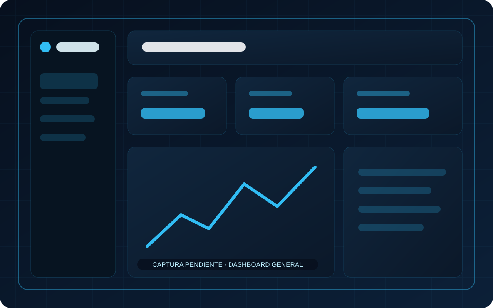

Información dispersa
Datos operativos repartidos entre planillas, mensajes y registros que no conversan entre sí.
Solución ISM · Gestión operacional
Plataforma modular para centralizar recursos, responsables, registros, movimientos y procesos internos. Está diseñada para transformar información dispersa en una operación visible, trazable y preparada para nuevas automatizaciones.
Prefiero conversar directo por WhatsApp
ISM Gestión Control es una plataforma modular de gestión operacional para centralizar procesos internos, responsables, estados, registros, recursos y reportes cuando la información hoy está dispersa entre distintas herramientas.
Problema → solución
La solución se configura según la forma real en que trabaja cada negocio.
Datos operativos repartidos entre planillas, mensajes y registros que no conversan entre sí.
Las tareas dependen del conocimiento informal y es difícil reconstruir qué ocurrió.
No siempre existe una vista clara de quién ejecutó, aprobó o recibió una acción.
La dirección no cuenta con indicadores o estados consolidados para tomar decisiones.
Capacidades
Implementamos lo que aporta valor y dejamos la arquitectura preparada para evolucionar.
Para quién está pensado
Centralización de tareas, recursos y responsables.
Seguimiento de actividades y cumplimiento.
Procesos repetitivos con necesidad de trazabilidad.
Flujos entre equipos que necesitan compartir estados.
Implementación
Identificamos actores, información, decisiones y puntos de control.
Definimos roles, estados, registros y reglas que deben quedar trazables.
Implementamos únicamente los módulos necesarios para la primera operación.
Nuevas áreas, automatizaciones e indicadores se integran sobre la misma base.
Evolución visual
No presentamos estos recursos como capturas reales. Son espacios visuales de referencia que indican los módulos que tendrá la evidencia pública dla solución.
Espacio reservado para la vista consolidada de indicadores, estados y pendientes.
Espacio reservado para la gestión de activos, recursos o inventarios asociados al proceso.
Espacio reservado para la visualización de procesos, responsables y estados.
Implementaciones y validación
Los clientes aparecen como casos cuando corresponde; la solución conserva una identidad propia de ISM Developer.
La solución nace de necesidades operacionales reales, pero las organizaciones de origen no forman parte de su identidad pública.
Ecosistema ISM
Los productos son independientes, pero pueden complementarse cuando el proceso del cliente necesita más de una capa digital.
Preguntas frecuentes
Respuestas breves sobre el alcance y la forma en que puede adaptarse Software de gestión operacional a una operación real.
Puede adaptarse a procesos internos con responsables, estados, registros, aprobaciones, recursos o seguimiento. El modelo se define a partir de la operación real del cliente.
Sí. La solución contempla usuarios, permisos, responsables y vistas por rol cuando el proceso necesita separar funciones o niveles de acceso.
Puede incorporar indicadores, filtros, consultas, reportes y exportaciones según la información que el negocio necesite controlar.
La arquitectura puede evolucionar hacia integraciones y automatizaciones cuando exista una necesidad concreta y una fuente de datos compatible.
Cuéntanos qué proceso necesitas controlar y dejamos ISM Gestión Control preseleccionado.
Enviar contexto → Opción 2Dimensiona módulos y actividades desde la línea Desarrollo e Implementación.
Abrir configurador → Opción 3Conversa directamente sobre procesos, roles, estados y trazabilidad.
Iniciar conversación →Revisamos tu contexto, definimos el alcance inicial y adaptamos la solución a tus procesos, usuarios y objetivos.